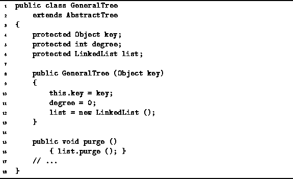

Data Structures and Algorithms
with Object-Oriented Design Patterns in Java
Data Structures and Algorithms
with Object-Oriented Design Patterns in Java
Program  defines the GeneralTree
constructor and purge methods.
According to Definition ,
a general tree must contain at least one node--an empty tree is not allowed.
Therefore, the constructor takes one argument,
any Object instance.
The constructor initializes the fields as follows:
The key field is assigned the argument;
the degree field is set to zero; and,
the list field is assigned an empty linked list.
The running time of the constructor is clearly O(1).
defines the GeneralTree
constructor and purge methods.
According to Definition ,
a general tree must contain at least one node--an empty tree is not allowed.
Therefore, the constructor takes one argument,
any Object instance.
The constructor initializes the fields as follows:
The key field is assigned the argument;
the degree field is set to zero; and,
the list field is assigned an empty linked list.
The running time of the constructor is clearly O(1).

Program: GeneralTree class constructor and purge methods.
The purge method of a container normally empties the container.
In this case, the container is a general tree which is not allowed to be empty.
Thus, the purge method shown in Program
discards the subtrees of the tree, but it does not discard the root.
The running time of the purge method is clearly O(1).
 Copyright © 1998 by Bruno R. Preiss, P.Eng. All rights reserved.
Copyright © 1998 by Bruno R. Preiss, P.Eng. All rights reserved.